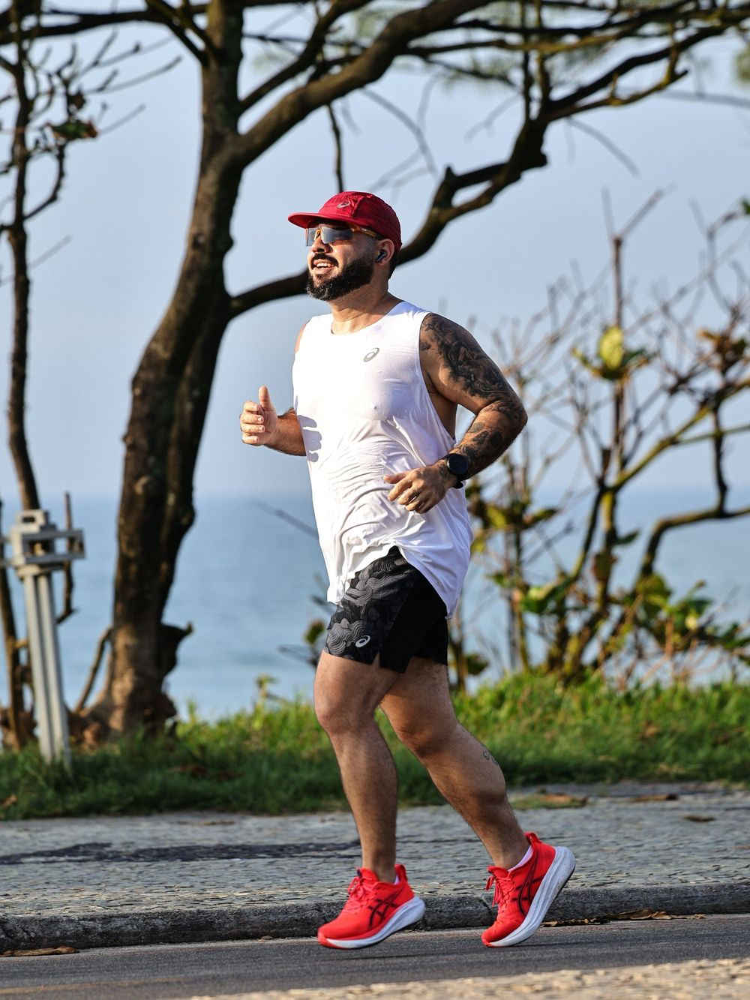
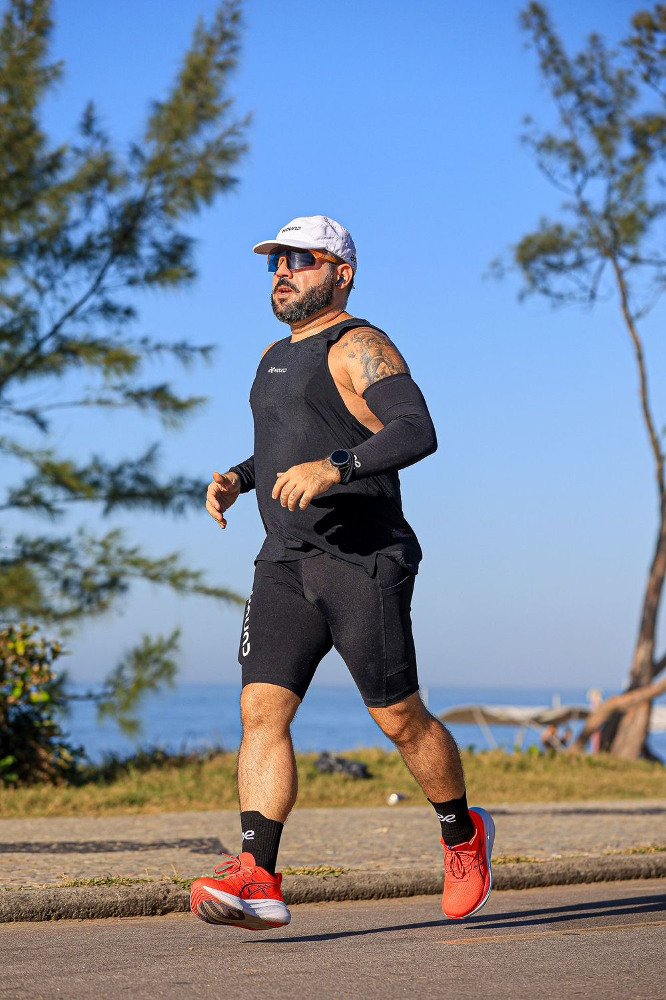
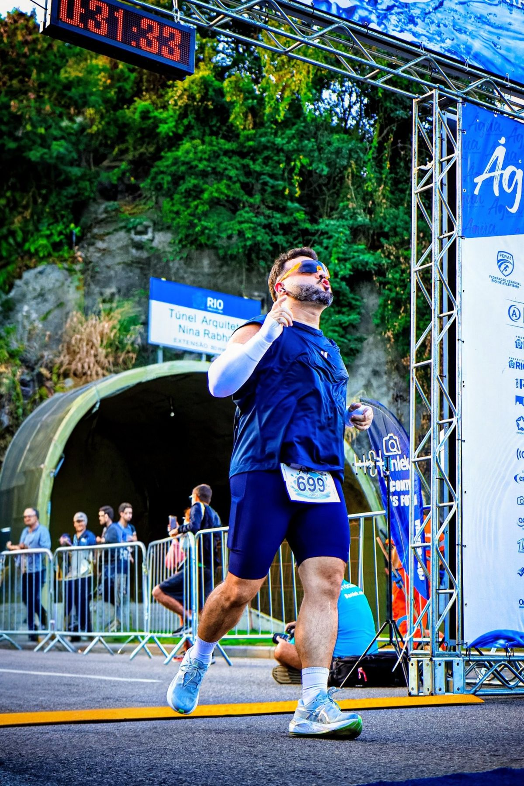
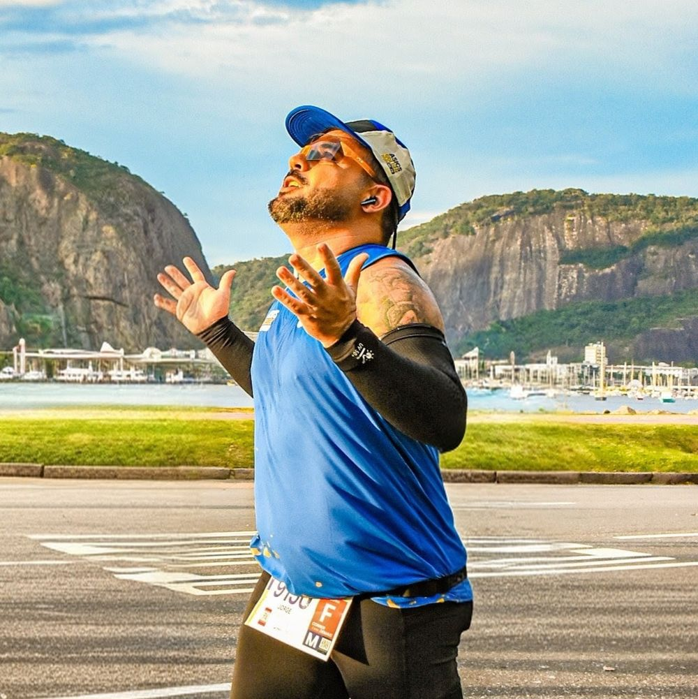
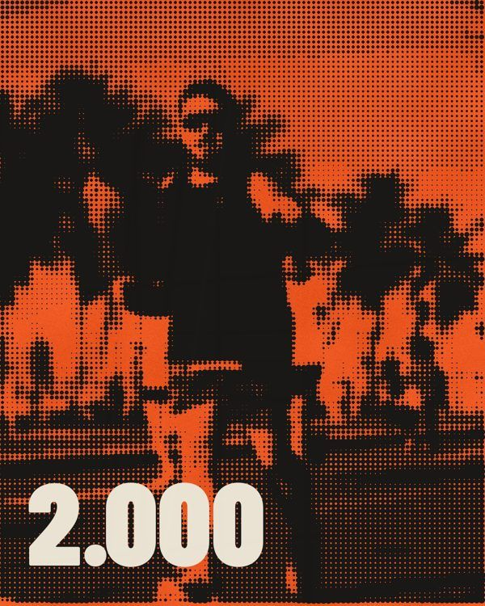
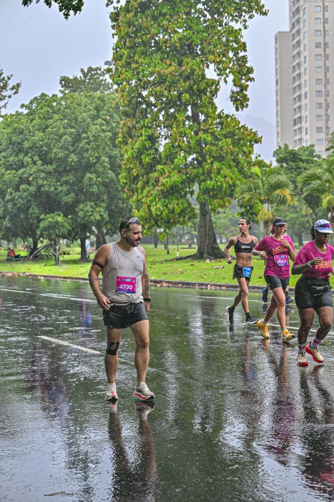

De 120 kg à primeira meia
Marcos
Os momentos que mudaram a jornada, inclusive os que doeram.
Antes
120 kg e fumante
O ponto de partida. Nada de corrida, nada de rotina de treino.
Abr 2026
Primeiro treino de corrida
Comecei no fim de abril, sem saber o que era pace.
2026
Primeiro 10K, no meu aniversário
Escolhi a data de propósito.

Ago 2026
Primeira parceria: Hound Running
O Fala do Fit Check com a Hound abriu a porta para as marcas.

Out 2026
Viggi e Dobro chegam
Novas parcerias. E venci o concurso de lançamento da Dobro com o Treino em DOBRO.
Out 2026
Recordes no 5K e no 15K
28:21 nos 5 km e 1:33:38 nos 15 km. Entrei na assessoria Hope.

27 Out 2026
Sorteio que alcançou 65 mil pessoas
Dois kits do Circuito das Estações, 5.991 comentários e +473 seguidores.

06 Nov 2026
2.000 seguidores
Um mês e pouco depois de virar FALA DELE CORREDOR.

08 Nov 2026
A lesão na Hoka Speed Run
O joelho travou no km 9. Começou o Diário do 21: recuperação contada sem filtro.

Mai 2027
Meia Maratona do Rio
A primeira meia. O próximo marco.